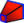

|
| Menüeintrag |
|---|
| Part Design → Abziehbarer Loft |
| Arbeitsbereich |
| PartDesign |
| Standardtastenkürzel |
| None |
| Siehe auch |
| Zu addierender Loft, Abziehbares Rohr |
Beschreibung
Das Werkzeug Abziehbarer Loft erstellt einen abziehbaren Volumenkörper in dem aktiven Körper indem ein Übergang zwischen zwei oder mehreren Skizzen (auch Schnitte genannt) erzeugt wird. Seine geometrische Form wird dann von der bestehenden Form abgezogen.
Anwendung
- Auf die Schaltfläche  Abziehbarer Loft klicken.
- Eine Skizze in dem Dialog Element auswählen anklicken, die als die erste Kontur verwendet werden soll und mit OK bestätigen.
- Alternativ kann eine einzelne Skizze ausgewählt werden, bevor auf die Schaltfläche Abziehbarer Loft geklickt wird.
- In dem Abschnitt Loft-Parameter, auf die Schaltfläche Schnitt hinzufügen klicken.
- Eine Skizze in der 3D-Ansicht auswählen. Diesen Schritt wiederholen, wenn weitere Skizzen benötigt werden.
- Bei Bedarf noch die Optionen anpassen und zum Abschluss OK klicken.
{kind=link}
Optionen
- Die Option Regelfläche generiert gerade Übergänge zwischen den Konturen. Dies wirkt sich jedoch nicht auf Lofts mit nur zwei Konturen aus. Wenn dies nicht ausgewählt wird, sind die Übergänge gleitend.
- Die Option Geschlossen macht einen Übergang von der letzten Kontur zu der ersten und bewirkt einen kompletten Umlauf.
- Mittels der Schaltfläche Schnitt entfernen kann eine Skizze durch Auswahrl in der 3D-Ansicht entfernt werden.
Eigenschaften
- Daten-EigenschaftLabel: Ein Name für die Operation, kann bei Bedarf geändert werden.
- Daten-EigenschaftSections: listed die verwendeten Konturen auf.
- Daten-EigenschaftRuled: siehe Optionen.
- Daten-EigenschaftGeschlossen: siehe Optionen.
- Daten-EigenschaftMidplane: N/A
- Daten-EigenschaftReversed: N/A
- Daten-EigenschaftRefine: "true" oder "false". Setzen dieser Option entfernt von Formelementen zurückgebliebene Kanten. Mehr Details finden sich unter Part RefineShape.
Limitierungen
- Skizzen müssen eine geschlossene Kontur bilden.
- Es ist nicht möglich die Form in einem Vertex enden zu lassen.
- Eine Kontur kann nicht auf derselben Ebene liegen, wie die unmittelbar vorausgehende Kontur.
- Um eine bessere Kontrolle über die gebildete Form zu haben, wird empfohlen in allen Konturen die gleiche Zahl von Segmenten zu verwenden. Für einen Übergang von einem Rechteck zu einem Kreis, sollte der Kreis aus vier verbundenen Kreisbögen bestehen.
Links
- Technische Details erläutert wie ein Part Loft/de erstellt wird. Der größte Teil des Inhalts ist auch für den PartDesign Abziehbarer Loft relevant.